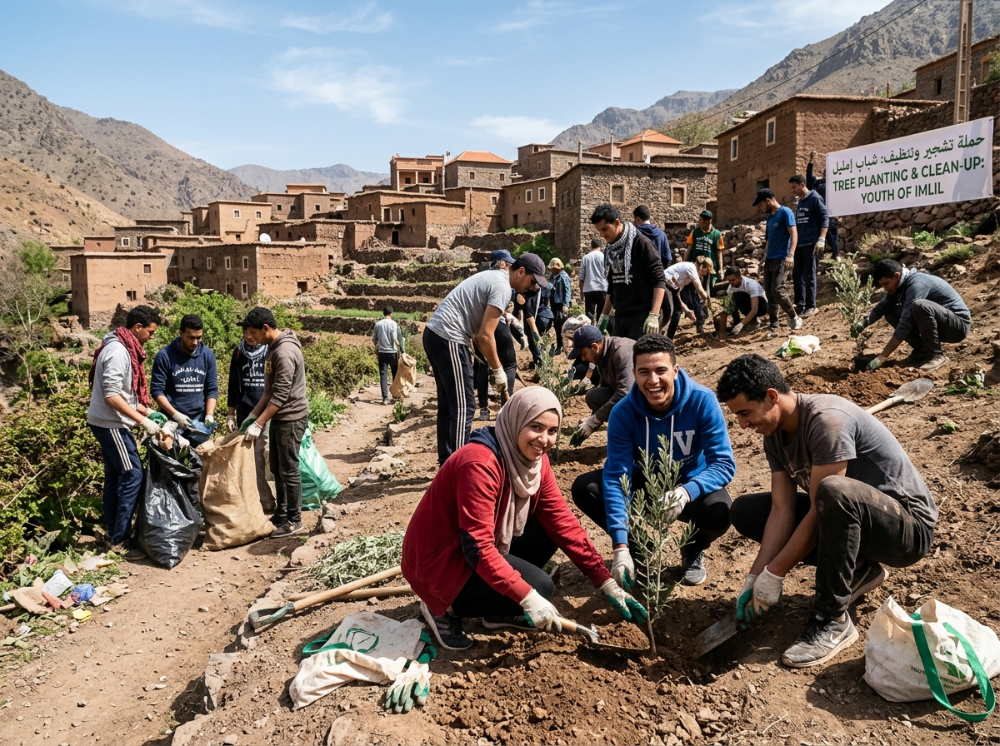
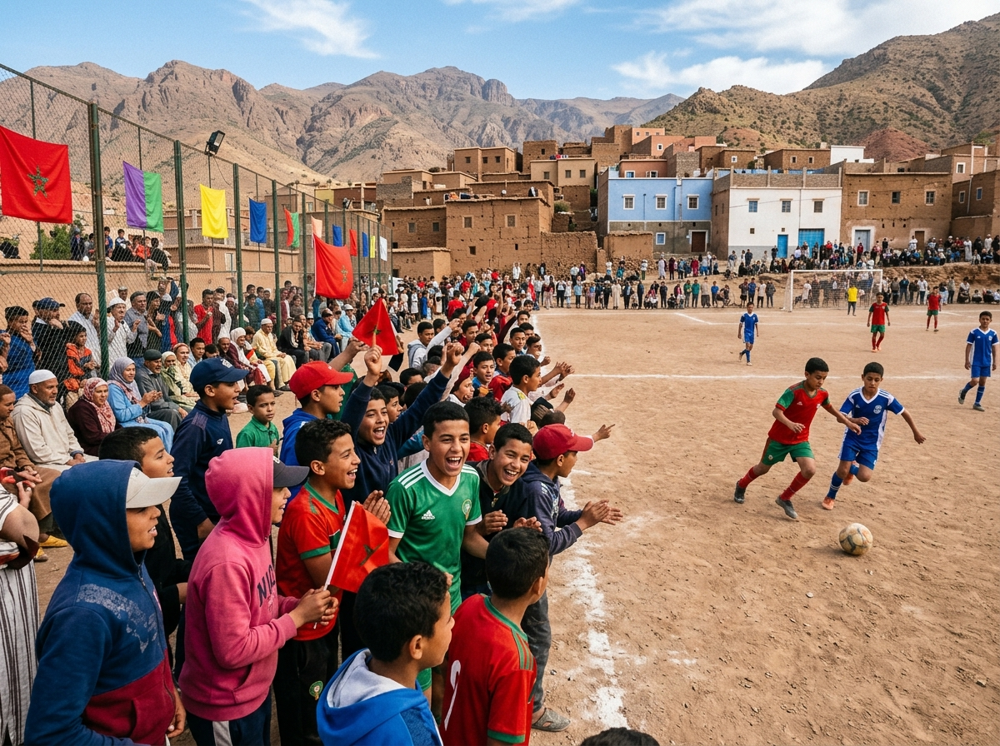
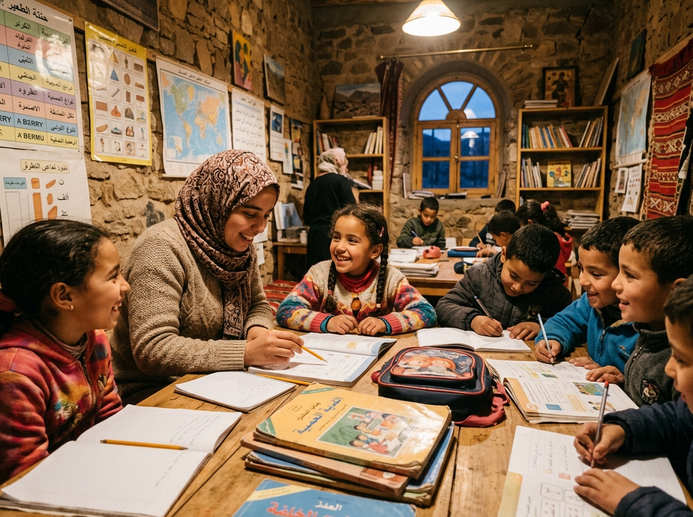
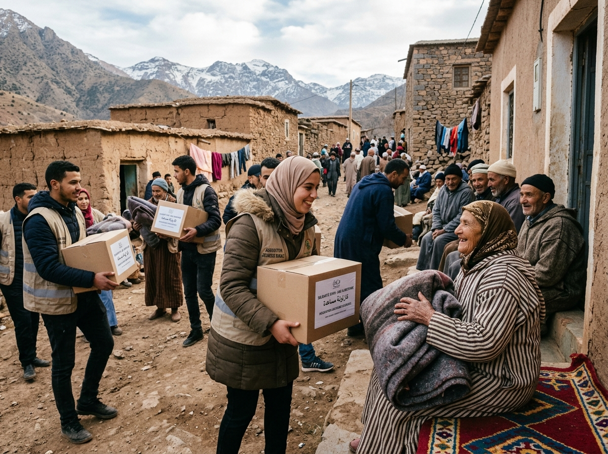
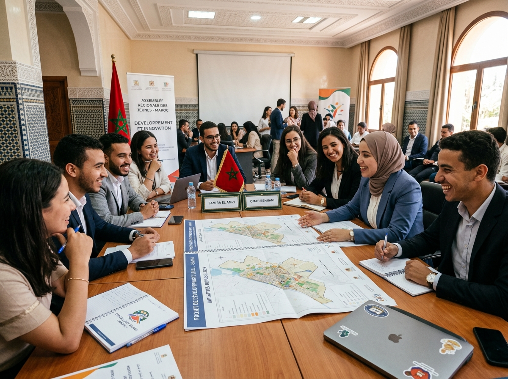

توحيد الطاقات والكفاءات الشبابية والمساهمة الفعالة في التنمية الشاملة وتحسين ظروف عيش الساكنة المحلية
إطار جمعوي مدني شبابي يضع في صلب اهتماماته تنمية الإنسان والمجال بدوار ادوطالب وادبيگفاين
الجمعية الشبابية بالدوار هي إطار جمعوي قانوني ومؤسساتي غير ربحي، يضم أبناء وشباب الدوار، ويهدف إلى توحيد جهودهم وطاقاتهم وتوجيهها نحو العمل الجماعي والتطوعي وخدمة المصلحة العامة، وبناء نموذج تنموي تشاركي يرتقي بمستوى الخدمات والحياة اليومية.
تسعى الجمعية إلى الاستفادة من الكفاءات والطاقات الشبابية والمساهمة في معالجة بعض الحاجيات والخصاصات التي تعرفها المنطقة، إلى جانب تنشيط الحياة الاجتماعية والثقافية والرياضية والاقتصادية بالدوار.
تعمل الجمعية على تعزيز روح التضامن والتعاون بين السكان، وتشجيع المبادرات المحلية، وتمثيل انشغالات الساكنة والترافع عن مطالبها المشروعة أمام الجهات المختصة والفاعلين العموميين.
تعتبر الجمعية حلقة وصل موثوقة بين ساكنة الدوار ومختلف الفاعلين المؤسساتيين والمدنيين، بهدف المساهمة في تحقيق تنمية محلية مستدامة وتحسين ظروف عيش السكان وتعزيز جودة البنية التحتية.
تتمثل أهم مجالات عمل الجمعية وأهدافها في 6 محاور استراتيجية أساسية
خطوات علمية وتشاركية تتبعها الجمعية لتحويل الأفكار إلى مشاريع واقعية ومستدامة
رصد الحاجيات الميدانية والخصاص بالدوار من خلال اللقاءات المباشرة مع الساكنة وتحديد الأولويات العاجلة.
إعداد ملفات تقنية ودراسات واضحة للمشاريع وبحث سبل التمويل والشراكات مع الفاعلين المؤسساتيين.
تفعيل المبادرات على أرض الواقع بإشراك مباشر للشباب وسكان الدوار في جو من التطوع والتعاون.
قياس الأثر الإيجابي للمشاريع وضمان صيانتها واستمرار منافعها لصالح الأجيال الصاعدة بالدوار.
تطمح الجمعية الشبابية إلى بناء إطار شبابي فعال ومسؤول، يقوم على العمل التطوعي والتعاون والمشاركة المواطنة، ويساهم في جعل الدوار فضاءً أكثر تنظيماً وتضامناً وحيوية، مع العمل على تحسين الظروف الاجتماعية والاقتصادية والثقافية والبيئية للساكنة.
تسعى الجمعية إلى جعل الشباب قوة أساسية وفاعلة في التنمية المحلية، من خلال تمكينهم من المشاركة في اتخاذ المبادرات، وتطوير مهاراتهم وقدراتهم، واستثمار طاقاتهم الحية في مشاريع تعود بالنفع المباشر على الدوار وساكنته.
صور وتوثيق حي لمختلف الأنشطة التطوعية، التربوية، الرياضية والتضامنية لشباب الدوار





كل ما تود معرفته حول أهداف الجمعية، شروط الانخراط، والمشاركة في الأنشطة
الجمعية مفتوحة لجميع أبناء وشباب دوار ادوطالب وادبيگفاين سواء المقيمين بالدوار أو خارجه، وكذا كل من يتقاسم معنا أهداف خدمة الصالح العام والمساهمة في تنمية المنطقة.
تعتمد الجمعية على واجبات انخراط الأعضاء، تبرعات ومساهمات أبناء الدوار والمحسنين، بالإضافة إلى الدعم المالي والتقني في إطار شراكات مع الجماعات الترابية، والمؤسسات العمومية، وبرامج المبادرة الوطنية للتنمية البشرية.
يمكن لأي مواطن أو شاب تقديم مقترحاته عبر استمارة التواصل بالموقع، أو عبر مراسلتنا بالبريد الإلكتروني، أو من خلال حضور اللقاءات الدورية العامة التي تنظمها الجمعية مع الساكنة.
تلتزم الجمعية بمبادئ الحكامة الجيدة والشفافية التامة، من خلال مسك دفاتر محاسباتية دقيقة، وتقديم التقريرين الأدبي والمالي في الجموع العامة، ونشر حصيلة الأنشطة والمشاريع المنفذة دورياً.
نحن رهن إشارتكم للإجابة عن استفساراتكم واستقبال أفكاركم ومبادراتكم التنموية
دوار ادوطالب وادبيگفاين
+212 6XX-XXXXXX
contact@jam3ia-adoutaleb.ma